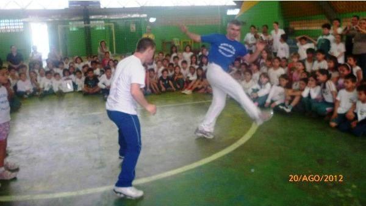
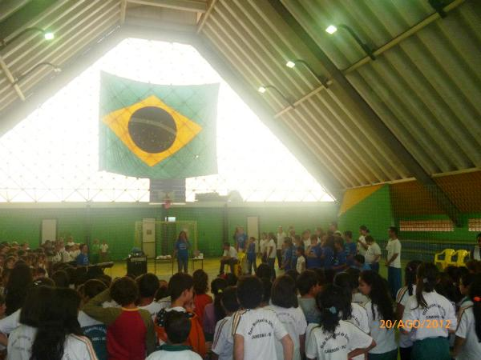
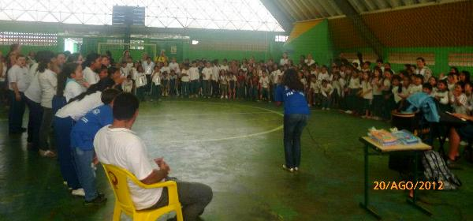
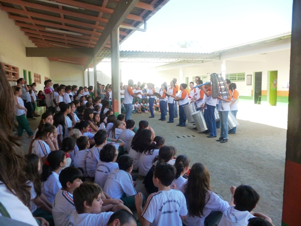
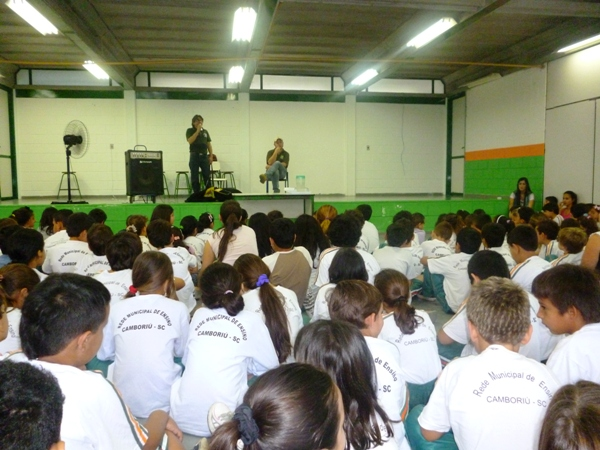
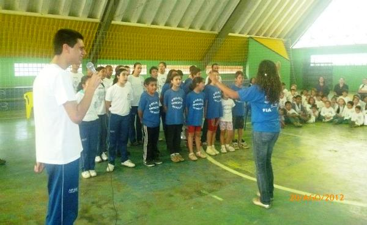

CAIC participa da Semana Nacional da Pessoa com Deficiência Intelectual e Múltipla
27 Agosto, 2012

|
Na Semana Nacional da Pessoa com Deficiência Intelectual ou Múltipla os alunos do CAIC Jovem Ailor Lotério puderam assistir diversas atividades envolvendo desde: - Apresentação " As empreguetes" da Apae; - Apresentação do Coral e Capoeira da APAE; - Basquete de cadeirantes da AFADEF; - Coral de Libras com a Intérprete Eliane e demais participantes; - Palestra Motivacional com Eduardo Torto; - Teatro da escolinha com os deficientes visuais da ADVIR; - Golbol: futebol para cegos; - Palestra para os professores com a AMA; - Apresentação da Fanfarra da Apae; - Apresentação da escola de Cães Guia Helen Keller; - Palestra com a Dulce da SAEDE; - Palestra para os professores do CAIC com AMOR PRA DOWN. No decorrer da semana os professores também trabalharam em sala de aula e na informática o tema com seus alunos das mais variadas formas. Isso tudo só foi possível graças ao comprometimento da Direção, supervisão, orientação, Núcleo de especialistas e demais funcionários que não mediram esforços para que tudo desse certo! Abaixo fotos do evento:       |